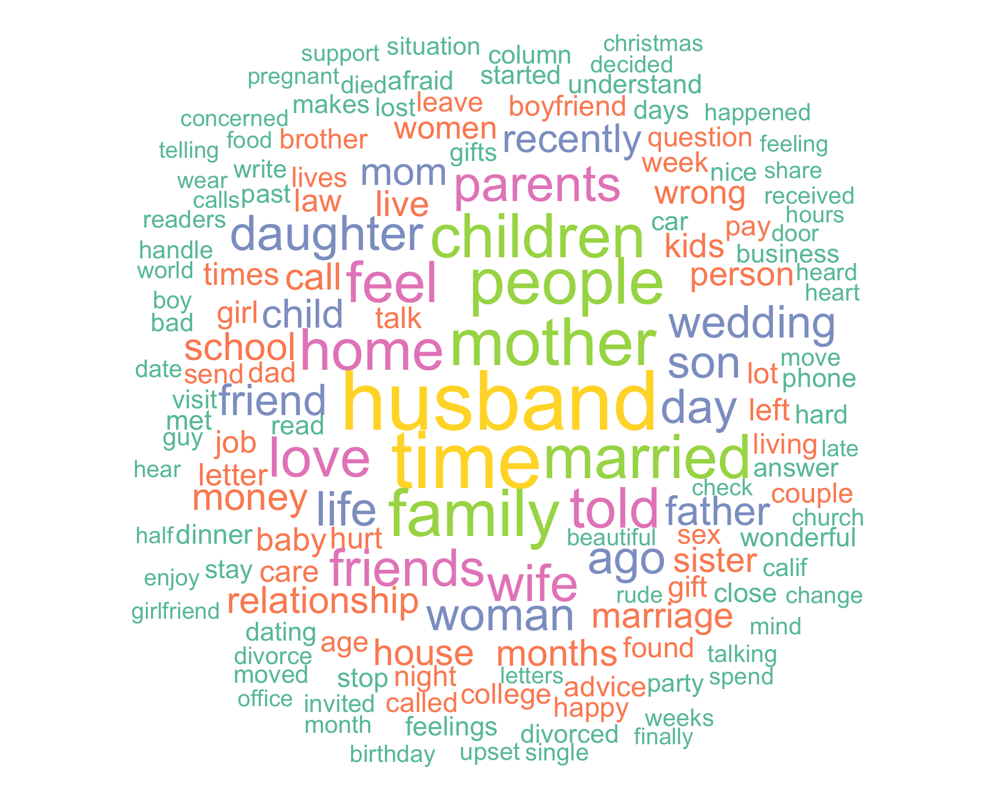
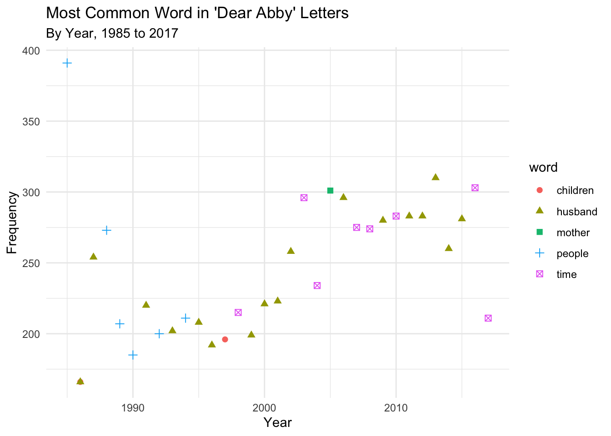

library(tidyverse)
data<-read_csv("https://raw.githubusercontent.com/the-pudding/data/master/dearabby/raw_da_qs.csv")DS002 - Mini Project 2
Analyzing Text Data From The Pudding’s “Dear Abby” Stories
Data Source
The data used for this analysis are the “Dear Abby” stories from 1985 to 2017, underlying The Pudding’s “30 years of American anxieties” article from November 2018 (https://pudding.cool/2018/11/dearabby/).
Data was accessed via The Pudding’s GitHub, at https://github.com/the-pudding/data/tree/master/dearabby.
The dataset consists of 20034 observations, each corresponding to a question sent in to ‘Dear Abby’, a popular advice column.
EDA
It seems that the questions in the dataset are already all in lowercase, but I will apply the str_to_lower() function to ensure my analysis is accurate.
data<-data|>
mutate(question_only=str_to_lower(question_only))Family Words
It is reasonable to assume that a number of these questions might relate to family matters, which are often pressing but too taboo to discuss with the family members involved.
Below, I use regular expressions to identify the most commonly occurring family members in the questions from 1985 to 2017.
I am considering ‘wife’, ‘husband’, ‘son’ and ‘daughter’ (and their plural and possessive forms) as these are the most immediate family members.
I am also including ‘marriage’ and ‘divorce’ since these are likely sources of distress or conflict that could push somebody to submit a question to the column.
wife<-sum(grepl("\\bwives\\b|\\bwife'?s?'?\\b", data$question_only))
husband<-sum(grepl("\\bhusband'?s?'?\\b", data$question_only))
son<-sum(grepl("\\bson'?s?'?\\b", data$question_only))
daughter<-sum(grepl("\\bdaughter'?s?'?\\b", data$question_only))
marriage<-sum(grepl("\\bmarriage'?s?'?\\b|\\bmarried\\b", data$question_only))
divorce<-sum(grepl("\\bdivorces?d?", data$question_only))
family_data<-data.frame(Wife=wife, Husband=husband, Son=son, Daughter=daughter, Marriage=marriage, Divorce=divorce)The table below shows the number of questions asked to Abby from 1985 to 2017 that included each term (including its plural or possessive forms).
print(family_data) Wife Husband Son Daughter Marriage Divorce
1 2775 5124 2320 2750 4887 1534It is very interesting to note that ‘wife’, ‘son’ and ‘daughter’ all appeared a similar number of times, while ‘husband’ was by far the most frequent, appearing almost twice as many times as the other terms (5124 times - this is approximately one quarter of the 20034 questions!) ‘Marriage’ was also very common, starring in 4887 questions.
Number of Questions Through the Years
For some more exploratory data analysis, I wanted to observe how the number of questions per year changed over time:
y_questions<-data|> group_by(year)|> summarize(n_questions=n())ggplot(y_questions, aes(x=year, y=n_questions))+
geom_point(color='pink')+
theme_dark()+
labs(x="Year",
y="Number of Questions",
title="'Dear Abby' Questions Over The Years",
subtitle="From 1985 to 2017")It seems like 1985 had an abnormally high number of questions. After this, the number of questions decreased steadily until 1999, when the number of questions per year began to increase again. It did so until 2016, and experienced a steep drop in 2017.
Question Length
Then, I was curious about the length of the questions in the dataset:
data|>
select(year, question_only)|>
mutate(size=str_length(question_only))|>
arrange(desc(size))|>
slice_head(n=10)# A tibble: 10 × 3
year question_only size
<dbl> <chr> <int>
1 1988 "media-wise, this is going to be a tough campaign for barbara bu… 13889
2 1995 "on one page of prison life magazine, an inmate describes his fa… 13411
3 1990 "this story has been entered on the data base in 2 parts. this i… 13225
4 1988 "kitty carlisle hart has spent her life in the\nspotlight. panel… 11690
5 1992 "this story has been entered on the data base in 3 parts. this i… 11550
6 1995 "arthur donald delacy would have--by all rights, should have--tu… 11087
7 1989 "with his arms stuffed in his pockets to the elbow, the cartooni… 10716
8 1995 "while charles schulz sits at his table, pen in hand, drawing th… 10275
9 1994 "i am so fed up with store employees treating me and my friend l… 8867
10 1986 "denise salvaggio's dream is to do for bugs what walt disney did… 8514The longest question occurred in 1998, with a size of 13889 characters - and it was about Barbara Bush!
What about the shortest question?
q_length<-data|>
select(year, question_only)|>
mutate(size=str_length(question_only))|>
arrange(size)|>
slice_head(n=10)
print(q_length)# A tibble: 10 × 3
year question_only size
<dbl> <chr> <int>
1 1996 "q: were you alone or by yourself?" 33
2 1996 "q: so you were gone until you returned?" 39
3 1990 "how would you define old age? getting there" 43
4 1996 "q: how long have you been a french canadian?" 44
5 1986 "what would you give a man who has everything? freda" 51
6 1990 "how would you define success? philosophy major, ucla" 52
7 1996 "q: the youngest son, the 20-year-old, how old is he?" 52
8 2008 "it's apathy ... but, who cares? -- malcolm in miami\n" 52
9 1996 "q: do you have any children or anything of that kind?" 53
10 2010 "how do you mend a broken heart? -- tears on my pillow" 53It occurred in 1996, with the rather ominous: “q: were you alone or by yourself?”. In 2010, someone asked a very hard question, but kept it incredibly succint at 53 characters: “how do you mend a broken heart?– tears on my pillow”.
47 - Chirp Chirp!
At Pomona College, the number 47 holds special meaning: it is said to be a number that frequently occurs in natural settings. With this in mind, I wanted to determine how often the number 47 appears in this dataset.
data<-data|>
mutate(chirp=str_detect(question_only, "47"))
sum(data$chirp)[1] 227The number 47 appears 227 times in the dataset, out of 20034 letters written to Abby.
Distinguishing Common Themes Using Word Count
I would like to determine which words are the most commonly occurring across all the questions to see if any common themes can be extracted.
First, stop words need to be removed - these are common words in the English language that don’t have much meaning. The stop_words dataframe from the tidytext library contains 3 lexicons of stop words.
We should also remove the words ‘dear’ and ‘abby’ (and its variants) since those will be at the start of almost every letter.
dear_abby <- c("dear", "abby", "abby's", "abbys")Word Cloud - What Concerned Americans Most Between 1985 and 2017?
Below is a word cloud displayed the 150 most common words from 32 years ‘Dear Abby’ letters (excluding stop words):
wc <- data|>
unnest_tokens(output=word, input=question_only, token="words")|>
anti_join(stop_words)|>
filter(str_detect(word, "^\\D+$"))|>
filter(!word %in% dear_abby)|>
group_by(word)|>
summarize(freq=n())|>
arrange(desc(freq))library(wordcloud2)
library(wordcloud)
library(RColorBrewer)
wordcloud(words = wc$word, freq = wc$freq, min.freq = 600, max.words=150, random.order=FALSE, rot.per=0, colors=brewer.pal(6, "Set2"), scale = c(5, 1))
We can see from both this word cloud and the earlier analysis done on family words that Americans are very concerned by family matters and family members: ‘husband’, ‘children’, ‘kids’, ‘mom’, ‘mother’, ‘married’, ‘family’, ‘wife’, ‘son’, ‘father’, ‘parents’, ‘sister’, to name a few.
From the word cloud, we can also distinguish the most common emotions: ‘hurt’, ‘afraid’, ‘enjoy’, ‘concerned’, ‘upset’.
Most Common Word by Year
words_by_year<-data|>
unnest_tokens(output=word, input=question_only, token="words")|>
anti_join(stop_words)|>
filter(str_detect(word, "^\\D+$"))|>
filter(!word %in% dear_abby)|>
group_by(word, year)|>
summarize(freq=n())|>
ungroup()|>
group_by(year)|>
slice_max(n = 1, order_by=freq)|>
arrange(year)ggplot(words_by_year, aes(x=year, y=freq))+
geom_point(aes(shape=word, color=word), size=2)+
labs(title="Most Common Word in 'Dear Abby' Letters",
subtitle= "By Year, 1985 to 2017",
x="Year",
y="Frequency")+
theme_minimal()
Husband Letters Over Time
Since ‘husband’ was the most common word between 1985 and 2017, it would be interesting to see how its frequency changed over time:
husband_year<-data|>
unnest_tokens(output=word, input=question_only, token="words")|>
anti_join(stop_words)|>
filter(str_detect(word, "^husband'?s?$"))|>
group_by(year)|>
summarize(freq=n())|>
arrange(year)ggplot(husband_year, aes(x=year, y=freq))+
geom_point(color="darkgreen", shape=18, size=2.5)+
theme_minimal()+
labs(title="Frequency of 'Husband' in 'Dear Abby' Letters",
subtitle= "1985 to 2017",
x="Year",
y="Number of Occurrences")Election Letters Over Time
Lastly, I was interested in determining whether the word ‘election’ (and its plural form) was a common concern. I also wanted to see if it became more frequent during US Presidential Election years.
elections_year<-data|>
unnest_tokens(output=word, input=question_only, token="words")|>
anti_join(stop_words)|>
filter(str_detect(word, "^elections?$"))|>
group_by(year)|>
summarize(freq=n())|>
arrange(year)ggplot(elections_year, aes(x=year, y=freq))+
geom_bar(stat="identity", aes(fill = ifelse(year %in% c(1988, 1992, 1996, 2000, 2004, 2008, 2012, 2016), "Yes", "No")))+
scale_fill_manual(values = c("Yes" = "navyblue", "No" = "gray")) +
theme_minimal()+
labs(title="'Dear Abby' Election Letters",
subtitle="Years With and Without US Presidential Elections",
y="Year",
x="Frequency",
fill="Election Year?")The word ‘election’ and its plural form ‘elections’ does not seem to be a popular concern, never appearing more than 4 times in one year. However, the plot above shows that these words were more common during US Presidential Election years than during years without a Presidential Election, with the exception of 1994.